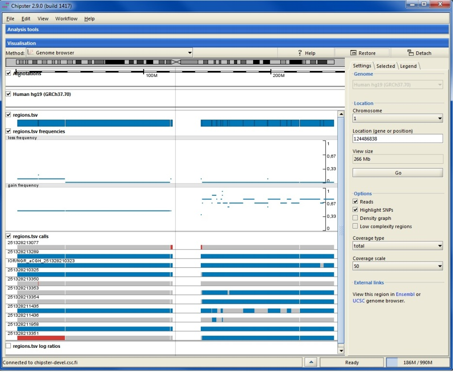

Chipster genome browser enables you to view next generation sequencing data and results in their genomic context using Ensembl annotations. You can zoom in to nucleotide level, highlight SNPs, view automatically calculated coverage and visualize BED scores and copy number aberrations.
Chipster genome browser supports SAM, BAM, BED, GTF, VCF and fasta files as well as tsv, where the first three columns are chr, start and end. SAM files need to be converted to BAM, BAM and fasta files need to be sorted and indexed, and BED, GTF, VCF and tsv files need to be sorted by chromosomal location. You can find sorting and indexing tools for the different file types in the Utilities category. If you import external files, sorting and indexing is accomplished during the data import step with Chipster preprocessor. If your data is already in the right format and your BAM file has the matching index file (.bai), you can skip the preprocessing step and import your data directly.

You can select files for viewing by clicking on them in the Datasets panel or in the Workflow panel (keep the control key down to select several files). Note that if you want to view a BAM file, it needs to have an index file (.bai) with the same name. If you select several BAM files, they should have different names so that Chipster can match them with the correct index files. Select Genome browser as the visualization method from the pulldown menu. In order to have more space for genome browsing you can maximise the visualization panel by clicking on the Maximise button.

Next you need to select the matching genome from the settings panel. If you are using the genome browser for the first time, you are asked to download annotations for the selected genome. Using downloaded gene and transcript annotations ensures optimal performance, and you need to download them only once. However, it is also possible to opt for using gene and transcript annotations over the internet. The actual genome sequence is by default used over the internet.
At every zoom level the grey bar on the chromosome indicates what area is shown below. Annotation track displays genes as blue boxes. Genes on the forward strand are shown on top of the ruler and genes on the reverse strand are shown below. When zoomed out, the alignment tracks show rough coverage based on sampling summaries of the BAM files. You can turn off any track by unticking the corresponding box. Tracks corresponding to BED, VCF or TSV files show genomic regions as blue boxes. Clicking on a box displays details about the selected feature in the side panel. For BED files you can select to visualize the scores (and color if available).

When zoomed in, the annotation track displays transcripts instead of genes. Translated regions are colored in blue and untranslated in yellow (please see the legend tab). Alignment tracks display the actual reads and the automatically calculated coverage. Reads colored in yellow mean that the pile of reads is truncated. In order to view all the reads, please tick the box Show all. Using the Options in the side panel allows you to

When zoomed in to the nucleotide level, reads are colored according to their nucleotide content (please see the legend tab). You can also choose to color only those bases which differ from the reference sequence by selecting the Highlight SNPs option. When this option and total coverage has been selected, colored bars will be added to the coverage track on those positions, where more than 20% of the bases differ from the reference.

If you would like to visualize a genome which is not available in Chipster, please do the following:
Chipster has a lot of analysis tools for microarray and sequencing based copy number data. In addition to pdf images, these tools produce tsv files with gain and loss frequencies, regions and log ratios, which can visualized in the genome browser. For more information about the files, please see the copy number tutorial.
When you finish viewing your data, you can save the session by selecting "File / Save session". Saving your preprocessed data files this way allows you to continue with them next time. You can name the session file anything you like, but the ending has to be .zip. If you would like to save an individual preprocessed file, please right-click on it in either Datasets or Workflow panel and select "Export".
This visualization uses the Picard package. Please see the Picard homepage for more details.